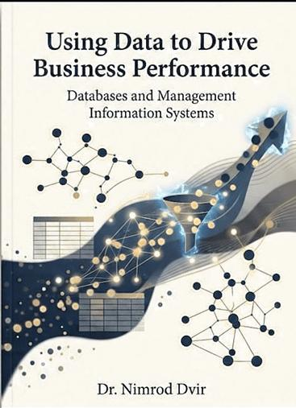

Students
Business majors who may never have planned to write code. Each chapter explains why a step matters before asking for it, and asks students to check and explain their work.
Book prospectus · October 2026
Databases and Management Information Systems
Prepared for Cengage · Publisher discussion draft · October 2026

Written, taught and revised in the classroom.
Tested with a small group of students, then revised where they needed more help.
The full interactive textbook, labs and quizzes, live this semester.
Explore the live courseware ↗The edition this page proposes, to develop together with Cengage.
See the proposed edition ↓A guide to this page
This page describes the book and its development, and the research behind it: five studies, from the market to my own classroom. It then sets out the proposed edition, the full research library, and the questions to decide together.
The proposition
This is courseware about the relationship between data and business performance. Students learn how the way they organize, query and present data changes the decisions a business can make.
It brings together a textbook, an interactive reader, guided practice, labs, auto-graded quizzes and a semester project, designed to work as one course for undergraduate business students.
I want students to see the whole journey: understand the data, build a reliable database, ask a useful question in SQL, check the answer, and turn it into a recommendation. AI is part of that journey, with students responsible for checking and explaining the work.
Readers and adopters
Business majors who may never have planned to write code. Each chapter explains why a step matters before asking for it, and asks students to check and explain their work.
A predictable chapter package: reading, a guided build, an interactive lab, an auto-graded quiz and instructor materials. Less stitching together of sources, more teaching.
One integrated course instead of a theory text plus a separate software manual, with a full MIS route and a shorter business-core route through the same chapters.
Why this book is different
Most database textbooks open with theory and diagrams, and hope students stay long enough to see why it matters. This one opens with the questions a manager actually asks.
What I am proposing we develop together
The starting point is a complete course already in use. The opportunity is to develop it with editorial support, a clear tool pathway, and wider instructor review.
The author’s starting point
After seven years of teaching this course to more than 4,000 students, I had a familiar problem: I liked parts of several textbooks, but no single book brought together everything I wanted students to learn. I often assigned two books and wrote the missing pieces myself.
I also saw a focused opportunity. In one published study, 85% of 61 business schools required at least one information systems course in the business core, and in our review no textbook appeared at more than 3 of the 31 schools. The research below documents both.
So I began building the courseware I wanted to teach. Over a year of writing and work with colleagues, it became a complete course. The classroom gave me the starting point. The research helped me question and refine it.
Teaching the course to more than 4,000 students, and seeing where business students need more context, practice or confidence.
More than ten years as a magazine editor: clear, visual writing, organized around the reader.
Market, syllabus, employer, textbook and classroom research. See the research
Because I built the platform, tools, examples and AI guidance can change each semester instead of each edition.
The gaps I filled each semester became the outline of the courseware.
Textbook, interactive reader, Let’s Builds, labs and quizzes, written with colleagues.
A small group of students used the full course. I revised the chapters where they needed more help.
The revised courseware is in use this semester, with student accounts, automatic quiz grading and an instructor dashboard.
Five studies tested and refined the design. The result is the 16-chapter edition proposed below.
Research 01 · Market and adoption
How many students reach a course this book can serve, and where could it be adopted?
A commonality we found: most business schools in the published studies require an information systems course of every business student, and most IS programs offer a database course.
The proposed routes address these two settings. Fit must be reviewed against each course’s outcomes and available teaching time. In round numbers:
Planning assumptions: each proxy multiplies a degree count by a historical, program-level share from a different source year. They are not enrollment-weighted course-seat estimates, and the MIS count covers all award levels. The two audiences overlap and must not be added together. Publisher enrollment and adoption data are needed to estimate addressable annual seats.
Which courses could use the courseware, what they need, and what a review should confirm.
| Segment | Likely need | Validation focus | Adoption opportunity |
|---|---|---|---|
| Primary Applied business database / MIS data management | Relational thinking, SQL, design, implementation, and business interpretation in one coherent learning path. | Course outcomes, annual sections and student seats, required database engine, incumbent materials, and switching criteria. | Full courseware adoption with readings, guided practice, independent labs, assessment, and instructor resources. |
| Business core data / IS course | Data meaning, information systems, queries, reporting, and a bounded project. | Which chapters fit the existing course and how much SQL and design it expects. | The business-core route through the same chapters. |
| Accounting information systems | Data meaning, controls, reporting and integrity. | Which modules fit the existing course. | Modular adoption or a companion pathway, subject to course fit. |
| Business analytics foundations | Data preparation, trustworthy SQL measures, and reporting. | Required design depth, analytical prerequisites, and reporting platform. | A selected chapter and lab route that supplies the database foundation for analytics. |
Price is part of the adoption conversation. Current listings show the spread between a digital book, a printed text and a courseware package. The scenario beside them is simple arithmetic to frame the conversation, not a forecast.
| Existing product / format | Listed U.S. price | Access or format |
|---|---|---|
| Database Systems 15e eBook | US$71.99 | Access through January 22, 2027 |
| Database Systems 15e eBook | US$98.99 | Access through July 21, 2027 |
| Database Systems 15e paperback | US$272.95 | Print purchase |
| MindTap for Database Systems 15e | From US$149.00 | Digital courseware; product / term selection applies |
| Adopting institutions | Sections × students | Annual seats |
|---|---|---|
| 10 Recruit a small set of suitable courses; establish tools and sample-unit fit. | 2 × 30 | 600 |
| 25 Confirm repeat adoption, instructor support needs and section enrollments. | 2 × 30 | 1,500 |
| 50 Validate capacity, delivery costs, distribution and portfolio fit. | 2 × 30 | 3,000 |
U.S. list prices retrieved October 25, 2026. Formats, access periods and institutional agreements affect what students pay. Adoption scenarios are arithmetic examples, not forecasts. No student price has been set for this proposal.
Research 02 · Syllabi and institutions
What do database and business-data courses across the country actually teach?
D direct business-database course BC business-core data course. Unbadged courses are technical, follow-on or graduate comparisons. Together, the badged courses are the 19 closest comparators.
CSI 508MGS 404, 351ISC 329CITA 215, 104CAPS 131BCS 260, 360, 390CPS 593CSE 305CIS 3400, 4400TECH-UB 26CISC 1050IST 195CST 1204, 4724CSC 056MIS 332CS 460, MET CS 669CS 3200COMPSCI 345MIS 250233:136:470IST 210CS 320MIS 310MIST 4610MGT 4058COP 4722MIS 325ITSS 4300MIS 321INFO 242MIS 766Share of the course descriptions in our benchmark that name each topic. Descriptions are a lower bound: a topic a description leaves out may still be taught.
Platform evidence is coded by role: practical use (the course assigns or demonstrates work with the tool), a named option, or a software-list mention. The chart counts any of the three, as a share of all 54 course families and of the 19 direct and business-core families. Families can name more than one platform, and 20 of the 54 name none explicitly.
Any mention (practical use, option or listed). Among the 19 closest comparators, Access has the largest footprint (9 of 19); across all 54 families, MySQL leads (15 of 54). Practical use alone is shown in the table.
| Platform | Practical use | Option | Listed only | Course families | Institutions | Direct / business-core |
|---|---|---|---|---|---|---|
| MySQL | 10 | 3 | 2 | 15 | 11 | 6 |
| Microsoft Access | 10 | 0 | 2 | 12 | 8 | 9 |
| Oracle | 4 | 2 | 2 | 8 | 7 | 2 |
| Microsoft SQL Server | 3 | 3 | 0 | 6 | 4 | 2 |
| PostgreSQL | 1 | 4 | 0 | 5 | 4 | 0 |
| MongoDB | 4 | 0 | 0 | 4 | 3 | 1 |
| Google BigQuery | 3 | 0 | 0 | 3 | 2 | 1 |
| Tableau | 3 | 0 | 0 | 3 | 2 | 1 |
| SQLite | 0 | 1 | 1 | 2 | 2 | 0 |
Each finding, and the design decision it led to in the proposed edition.
Design and data modelingNamed in every course description in our benchmark.
SQL and hands-on buildingEach appears in 77% of the benchmark course descriptions.
Multiple platformsAccess has the largest documented footprint in the Direct / Business-core subset; MySQL leads across all reviewed course families. The archive also includes Oracle, SQL Server, PostgreSQL and other systems.
BI and analyticsNamed in 31% of the benchmark course descriptions.
AI and cloudAI appears in 8% of the benchmark course descriptions; cloud, APIs and ETL in none.
Staged projectsStaged, multi-phase projects recur across the documents reviewed.
A few examples show how specific courses informed the proposed learning path.
| Institution | Course | Evidence date / level | Documented emphasis | Implication for this proposal |
|---|---|---|---|---|
| Rutgers | 33:136:470 | Fall 2026 | SQL early, design/normalization, operational topics and a staged project. | Supports use-before-design and a cumulative project. |
| Baruch | CIS3400 | Fall 2026 draft | Business requirements, ER modeling, normalization, SQL and an Access application. | Preserve application thinking and a substantive Access companion. |
| NYU Stern | TECH-UB26 | Spring 2026 | BigQuery SQL, cleaning, joins, aggregation, subqueries and window queries; ER concepts. | Supports browser/cloud SQL and an analytics-facing route. |
| Temple | MIS2502 | Spring 2026 | SQL, schemas, normalization, Python/JSON, data movement and analytics. | Connect query work to preparation and interpretation. |
| Georgia Tech | MGT4058 | Fall 2026 | Design, relational mapping, normalization, SQL and BI/warehouse concepts. | Protect the database core while connecting to reporting. |
| Boston University | MET-CS669 | Spring 2026 · graduate | Design, SQL, operations and a project developed across six iterations. | Staged project structure is useful; graduate technical depth remains optional. |
| UT Dallas | ITSS4300 | Spring 2026 | SQL, modeling, normal forms, CTEs, windows, BI and security. | Provide advanced SQL extensions without removing essential design. |
| University of Georgia | MIST4610 | Summer 2020 | Modeling, MySQL, query work and visual answers to business questions. | Supports a query-to-communication chain; platform evidence is historical. |
63 source documents
Role: Direct. Counting status: Selected course family.
ER/UML, normalization, SQL, Access, web applications, transactions and warehousing; staged project.
Platform evidence: MySQL (used); Microsoft Access (used).
Original sourceRole: Direct. Counting status: Selected course family.
SQL, ER/EER, normalization, physical design, performance, application development and data integration.
Platform evidence: MySQL (listed); Microsoft Access (listed); Oracle (listed).
Original sourceRole: Business-core. Counting status: Selected course family.
Business IS with Access and Salesforce project work, modeling, queries, forms and reports.
Platform evidence: Microsoft Access (used); Salesforce (used).
Original sourceRole: Graduate. Counting status: Selected course family.
ER, normalization, SQL/PLSQL, tuning, application development, warehouse/integration and distributed data.
Platform evidence: MySQL (listed); Microsoft Access (listed); Oracle (listed); SQLite (listed).
Original sourceRole: Direct. Counting status: Selected course family.
Relational structure, SQL, ER modeling, storage/indexing, transactions, recovery, cloud/distributed data and warehousing.
Platform evidence: No explicit practical platform established in reviewed text.
Original sourceRole: Technical. Counting status: Selected course family.
SQL, ER modeling, normalization, integrity, security, backup, transactions, reporting, NoSQL and capstone.
Platform evidence: No explicit practical platform established in reviewed text.
Original sourceRole: Business-core. Counting status: Selected course family.
Access database creation, maintenance, organization and queries; older software version.
Platform evidence: Microsoft Access (used).
Original sourceRole: Technical. Counting status: Selected course family.
ER, normalization, relational algebra, SQL, physical indexing, optimization, triggers, NoSQL and working application project.
Platform evidence: No explicit practical platform established in reviewed text.
Original sourceRole: Supplement. Counting status: supplement to 008.
Topic sequencing for the Fall 2026 CSE305 offering, including SQL, design and later system topics.
Platform evidence: See grouped/related course.
Original sourceRole: Technical. Counting status: earlier version of 008.
CSE305/532 relational design, SQL, application project and deeper query-processing, indexing and optimization material.
Platform evidence: See grouped/related course.
Original sourceRole: Graduate. Counting status: Selected course family.
Database fundamentals, SQL, applications, transactions, integrity, concurrency, security and distributed systems.
Platform evidence: MySQL (used).
Original sourceRole: Direct. Counting status: Selected course family.
Business requirements, ER modeling, relational mapping, normalization, SQL, Access application project, transactions and ethics.
Platform evidence: Microsoft Access (used).
Original sourceRole: Follow-on. Counting status: Selected course family.
Dimensional models, warehouse architecture, ETL/ELT, cloud, NoSQL and analytics project; assumes prior database competence.
Platform evidence: Google BigQuery (used); Tableau (used).
Original sourceRole: Direct. Counting status: Selected course family.
SQL, cleaning, joins, aggregation, subqueries and window queries with relational/ER concepts; BigQuery.
Platform evidence: Google BigQuery (used).
Original sourceRole: Graduate. Counting status: Selected course family.
Python and SQL, APIs, collection, cleaning, storage and business insight project.
Platform evidence: No explicit practical platform established in reviewed text.
Original sourceRole: Direct. Counting status: departmental duplicate; 030 is term-specific.
Relational/ER design, normalization, SQL, relational algebra, MySQL/PHP application project and optional NoSQL.
Platform evidence: See grouped/related course.
Original sourceRole: Direct. Counting status: Selected course family.
SQL, schemas/keys, normalization and joins alongside Python, JSON, ETL, analytical storage, visualization and mining.
Platform evidence: MySQL (used).
Original sourceRole: Graduate. Counting status: Selected course family.
ER/EER/UML, normalization, SQL, stored procedures/triggers, transactions and a project developed over six iterations.
Platform evidence: Oracle (used); Microsoft SQL Server (option); PostgreSQL (option).
Original sourceRole: Technical. Counting status: Selected course family.
SQL-first sequence, ER/normalization, indexing, warehouse concepts, procedures/triggers, transactions, APIs and NoSQL.
Platform evidence: MySQL (used).
Original sourceRole: Direct. Counting status: Selected course family.
Database fundamentals, ER/relational design, normalization, SQL creation/population/querying and administration.
Platform evidence: Microsoft SQL Server (used).
Original sourceRole: Follow-on. Counting status: Selected course family.
Advanced design, SQL, procedures/triggers, indexes, security, reporting and application interfaces.
Platform evidence: Microsoft SQL Server (used).
Original sourceRole: Direct. Counting status: Selected course family.
Relational modeling, normalization, MySQL SQL, analytical questions and business visualization.
Platform evidence: MySQL (used); Exploratory (used).
Original sourceRole: Supplement. Counting status: supplement to 023.
Team data model, database implementation, diverse SQL queries and visual answers to business questions.
Platform evidence: See grouped/related course.
Original sourceRole: Supplement. Counting status: supplement to 023.
Assessment and grading structure for MIST4610.
Platform evidence: See grouped/related course.
Original sourceRole: Supplement. Counting status: supplement to 023.
Relationships/modeling, joins, normalization, advanced SQL and business analytics sequence.
Platform evidence: See grouped/related course.
Original sourceRole: Direct. Counting status: Selected course family.
ER design, logical mapping/normalization, DDL/DML, joins/aggregation/subqueries, PL/SQL, security, warehouse/ETL and NoSQL.
Platform evidence: Oracle (used); MongoDB (used); Tableau (used).
Original sourceRole: Graduate. Counting status: earlier version of 054.
Design, SQL, integration, warehousing, quality/governance, transactions and performance.
Platform evidence: See grouped/related course.
Original sourceRole: Graduate. Counting status: Selected course family.
Python/ORM applications, tuning, NoSQL, distributed systems, embeddings, vector retrieval, RAG and AI-assisted querying.
Platform evidence: SQLite (option); PostgreSQL (option); MySQL (option); MongoDB (used); Redis (used).
Original sourceRole: Graduate. Counting status: Selected course family.
ER design, normalization, Oracle SQL, administration, concurrency, web applications, privacy and staged case project.
Platform evidence: No explicit practical platform established in reviewed text.
Original sourceRole: Technical. Counting status: Selected course family.
Query processing/optimization, transactions, concurrency, web/XML, warehousing and specialized database types.
Platform evidence: No explicit practical platform established in reviewed text.
Original sourceRole: Follow-on. Counting status: Selected course family.
Advanced database implementation, transactions, web data, analytics and nonrelational/big-data topics.
Platform evidence: No explicit practical platform established in reviewed text.
Original sourceRole: Direct. Counting status: Selected course family.
Early SQL through joins/views; then design/normalization, indexes, transactions, security and architectures; two-phase data project.
Platform evidence: MySQL (used).
Original source: archived copy held by the author; no public URL.
Role: Graduate. Counting status: Selected course family.
Assumes SQL/design; cloud storage, multiple NoSQL models, distributed systems, Spark/streaming and data engineering projects.
Platform evidence: MongoDB (used); Neo4j (used); Amazon Web Services (used).
Original source: archived copy held by the author; no public URL.
Role: Technical. Counting status: Selected course family.
Relational model/algebra, SQL, ER, constraints/triggers, transactions, distributed/NoSQL and client-oriented application project.
Platform evidence: No explicit practical platform established in reviewed text.
Original source: archived copy held by the author; no public URL.
Role: Direct. Counting status: Selected course family.
ER design, relational mapping, normalization, SQL, implementation, BI/warehousing and awareness of AI-enabled support.
Platform evidence: No explicit practical platform established in reviewed text.
Original sourceRole: Technical. Counting status: Selected course family.
ER, relational algebra/SQL, storage, query processing, transactions, concurrency, replication and NoSQL/MapReduce.
Platform evidence: No explicit practical platform established in reviewed text.
Original sourceRole: Graduate. Counting status: Selected course family.
Relational algebra, SQL, schema design/normalization, indexing, query optimization, transactions and concurrency.
Platform evidence: No explicit practical platform established in reviewed text.
Original sourceRole: Graduate. Counting status: Selected course family.
Managerial cases, relational design, SQL, transactions, quality, governance/privacy, NoSQL and organizational project.
Platform evidence: No explicit practical platform established in reviewed text.
Original sourceRole: Direct. Counting status: Selected course family.
Conceptual ER design, logical normalization, physical design/indexes and Access/SQL team implementation.
Platform evidence: Microsoft Access (used).
Original sourceRole: Follow-on. Counting status: Selected course family.
Oracle SQL, functions/subqueries, schema operations, privileges, concurrency and database programming; prior design assumed.
Platform evidence: Oracle (used).
Original sourceRole: Direct. Counting status: earlier version of 055.
ER/normalization/SQL, performance, concurrency/security, BI/big data and project work.
Platform evidence: See grouped/related course.
Original sourceRole: Follow-on. Counting status: Selected course family.
Advanced SQL, stored procedures/triggers, NoSQL/MongoDB, administration and a multi-phase project; prerequisite ITSS4300.
Platform evidence: MySQL (used); MongoDB (used).
Original sourceRole: Technical. Counting status: Selected course family.
SQL, ER/normalization, algebra/calculus, constraints/triggers, web/XML and DBMS implementation topics.
Platform evidence: No explicit practical platform established in reviewed text.
Original sourceRole: Technical. Counting status: Selected course family.
SQL-first queries and updates, then ER/normalization, PostgreSQL indexing/views and transactions.
Platform evidence: PostgreSQL (used).
Original sourceRole: Technical. Counting status: Selected course family.
Relational/ER concepts, SQL retrieval, DDL/CRUD, integrity/security and MySQL project.
Platform evidence: MySQL (used).
Original sourceRole: Follow-on. Counting status: Selected course family.
GCP, Hadoop/Spark/PySpark, machine-learning pipelines, evaluation and streaming.
Platform evidence: No explicit practical platform established in reviewed text.
Original sourceRole: Graduate. Counting status: Selected course family.
ER design, normalization, SQL/algebra, Access implementation, transactions, security and ethics.
Platform evidence: Microsoft Access (used).
Original sourceRole: Graduate. Counting status: Selected course family.
Dimensional models, ETL/ELT, cloud platforms, NoSQL/big-data architectures and analytics project.
Platform evidence: Google BigQuery (used); Tableau (used).
Original sourceRole: Graduate. Counting status: Selected course family.
Cloud, Hadoop/Spark, machine-learning data pipelines and streaming.
Platform evidence: No explicit practical platform established in reviewed text.
Original sourceRole: Technical. Counting status: Selected course family.
Conceptual design, refinement, implementation, SQL, administration and project work.
Platform evidence: Microsoft SQL Server (used); MySQL (option); PostgreSQL (option); Oracle (option); IBM Db2 (option).
Original sourceRole: Direct. Counting status: Selected course family.
Relational databases, complex SQL, design, storage, transactions, security, programming and NoSQL.
Platform evidence: MySQL (used); Microsoft Access (used).
Original sourceRole: Graduate. Counting status: Selected course family.
Relational/ER modeling, normalization, several weeks of SQL, views and transactions; multiple DBMS options.
Platform evidence: Microsoft SQL Server (option); MySQL (option); PostgreSQL (option); Oracle (option).
Original sourceRole: Direct. Counting status: Selected course family.
Early SQL and modeling, 1NF–3NF, joins/unions, CTEs, window functions, BI, tuning, DDL/views and security.
Platform evidence: Microsoft SQL Server (option); Tableau Prep (used).
Original sourceRole: Business-core. Counting status: Selected course family.
Access tables, queries, forms and reports in a one-credit course.
Platform evidence: Microsoft Access (used).
Original sourceRole: Technical. Counting status: Selected course family.
Relational design, normalization, keys/constraints, SQL DDL/DML, joins/subqueries, views, administration and import/export.
Platform evidence: Oracle (used).
Original sourceRole: Follow-on. Counting status: Selected course family.
Key-value, document, column-oriented and graph databases, queries and ethical issues.
Platform evidence: No explicit practical platform established in reviewed text.
Original sourceRole: Business-core. Counting status: Selected course family.
Broad computer literacy, Office applications, spreadsheets and a short Access unit.
Platform evidence: Microsoft Access (used).
Original sourceRole: Graduate. Counting status: Selected course family.
ER design, normalization, SQL, views, interface/report integration and PHP/MySQL/Access project.
Platform evidence: MySQL (used); Microsoft Access (used).
Original sourceRole: Follow-on. Counting status: duplicate representation of 058.
CST4724 NoSQL scope and outcomes in abbreviated PDF form.
Platform evidence: See grouped/related course.
Original sourceRole: Technical. Counting status: Selected course family.
ER design, normalization through BCNF, SQL, development lifecycle and a documented database capstone.
Platform evidence: No explicit practical platform established in reviewed text.
Original sourceRole: Follow-on. Counting status: Selected course family.
Advanced SQL/PLSQL, procedures/cursors/triggers, transactions, recovery, higher normalization and security.
Platform evidence: No explicit practical platform established in reviewed text.
Original sourceRole: Follow-on. Counting status: Selected course family.
DBMS installation/configuration, users/privileges, storage, backup/restore, performance and integrity.
Platform evidence: No explicit practical platform established in reviewed text.
Original sourceRole: Business-core. Counting status: Selected course family.
Broad hardware, operating systems, networks, cloud, ethics/AI, spreadsheets/visualization and a brief database unit.
Platform evidence: No explicit practical platform established in reviewed text.
Original sourceSearch filters document records, including grouped supplements. The aggregate denominator remains 54 course families.
Method: 63 archived documents from 31 institutions, grouped into 54 course families. Topic shares come from the catalogue benchmark of course descriptions; the AI review covers recent primary offerings, 2024 to 2026. The searchable register keeps each source date and course role.
Research 03 · Employment and industry
Which of the skills this book teaches do employers ask for?
A 2026 analysis by 365 Data Science of 1,000 Indeed USA data analyst postings (855 relevant), U.S. Bureau of Labor Statistics projections for 2025–35, and the World Economic Forum employer survey.
Share of 855 U.S. data analyst job postings that list each skill.
| Evidence | Finding | Courseware implication |
|---|---|---|
| BLS: data scientists, 2025–35 | 35% projected growth, compared with 3% for all occupations; about 24,800 openings annually. [L1] | Connect data preparation and queries to interpretation, communication, and decisions. |
| BLS: database architects / administrators, 2025–35 | Architects: 9% growth. Administrators: 0%. Combined: about 7,300 openings annually. [L2] | Retain modeling, quality, permissions, backup, and system judgment alongside analytics. |
| WEF: Future of Jobs Report 2025 | Survey of 1,000+ employers, representing 14 million+ workers across 55 economies; roughly 7 in 10 identify analytical thinking as essential. [L3] | Require students to explain a result, test its reliability, and justify an action. |
| WEF: skills outlook to 2030 | AI and big data lead the skills employers expect to grow fastest. [L3] | Integrate responsible AI use, verification, data provenance, and limits across the learning experience. |
Job-posting shares describe this sample of 855 postings, not all U.S. hiring. BLS growth projections (the change in employment, 2025–35) and annual openings are separate measures: openings include replacement hiring, so they can be substantial even where growth is flat. Global employer expectations (WEF) are distinct from U.S. job-posting requirements.
Research 04 · Textbooks
What do the leading textbooks do well, and where can this one add value?
I compared the textbooks already used in these courses, starting with four especially relevant titles. The wider audit records 60 named books and course texts. I examined their chapter sequences, practice environments and course fit, then asked what this courseware should keep and where it could add value.
Coronel and Morris · Cengage, 15th edition (©2027)
Friedrichsen et al. · Cengage, 10th edition (2021)
Kroenke, Auer, Vandenberg and Yoder · Pearson, 10th edition
Hoffer, Topi, Venkataraman and Bala · Pearson, 14th edition
Winsberg et al. · zyBooks
Murach · 4th edition

Dvir · proposed next edition
Publisher pages: Coronel and Morris 15e; Concepts of Database Management 10e; Database Concepts 10e; Modern Database Management 14e. Also reviewed: zyBooks and Murach.
We coded each chapter of the four main textbooks by its main topic to see which topics the books have in common and in what order they teach them. Each square is one chapter. The last row is the proposed outline of this book.
M marks the midterm Integration Studio. Topic classification is ours, from publisher tables of contents.
What it tells us: the four compared sequences share relational foundations, SQL and design, and open with database foundations. The proposed edition keeps that core, opens with a business and data-literacy sequence, and continues into dedicated analysis, reporting, Power BI and capstone work.
Coronel and Morris · 15th edition; 14th retained as historical baseline [P2]
Broad database design, implementation and systems instruction. Its digital resources already include SQL practice; the current edition places SQL before formal design.
The proposed book narrows the primary audience to applied business learners and makes validation, reporting and a decision memo part of one repeated workflow.
The 15th-edition sequence is paraphrased from the earlier contents audit; the official current listing was checked for edition and scope. The uploaded 14th edition instead puts modeling/normalization before SQL. Do not use its sequence to describe the 15th.
Friedrichsen, Ruffolo, Monk, Starks, Pratt and Last · 10th edition [P3]
A concise applied introduction with QBE/algebra, SQL, normalization, relationships, operations, careers and trends. Includes cases and Access training in MindTap.
The nearest portfolio conversation: a business-performance framing with verified analytical SQL, a proposed browser-to-hosted PostgreSQL path, BI work and an integrated decision deliverable. This is a potential position, not an agreed replacement.
The official nine-module sequence is paraphrased. Appendices address a complete design example, SQL, FAQs, MySQL and requirements analysis.
Kroenke, Auer, Vandenberg and Yoder · 10th edition; uploaded PDF is 9th [P4]
A compact hands-on database text with multiple running examples/projects, software flexibility, cloud coverage and MySQL extensions.
The proposed distinction is the sustained business-measure-to-decision chain and explicit evidence requirements, rather than the mere existence of business cases, cloud topics or early SQL.
Seven-part chapter sequence paraphrased using publisher/reference-edition audit. The older uploaded PDF supports historical analysis and must not be labeled the current edition.
Hoffer, Topi, Venkataraman and Bala · 14th edition [P5]
A comprehensive organizational database text. Current coverage extends from data to analysis, with an analytics chapter, notes on cloud-based solutions and new State of AI sections.
A serious comparison: the proposal must demonstrate a more bounded business-course workload and a coherent guided-to-independent learning experience; it cannot claim competitors omit analytics or AI.
Current official chapter-level sequence paraphrased. Advanced normal forms and notation appear in appendices.
60 named titles in the prior audit
Raghu Ramakrishnan; Johannes Gehrke
2 required/main; 1 optional-only; 0 listing-only institutions.
Hofstra University; Rutgers University; Stony Brook University
| Course | Term | Role | Edition as cited |
|---|---|---|---|
| Stony Brook University · CSE305-532 | Spring2021 | Required | 3rd |
| Rutgers University · 33-136-470 | Departmental | Suggested, not required | 3rd |
| Hofstra University · CSC056 | Fall2005 | Required | 3rd |
Hector Garcia-Molina; Jeffrey Ullman; Jennifer Widom
2 required/main; 1 optional-only; 0 listing-only institutions.
Boston University; Lafayette College; UMass Amherst
| Course | Term | Role | Edition as cited |
|---|---|---|---|
| Lafayette College · CS320 | Fall2020 | Required | 2nd |
| Boston University · CS460 | Fall2026 | Optional | 2nd |
| UMass Amherst · COMPSCI345 | Undated | Listed main text | 2nd |
Ramez Elmasri; Shamkant Navathe
1 required/main; 2 optional-only; 0 listing-only institutions.
Florida International University; Michigan Dearborn; UT Dallas
| Course | Term | Role | Edition as cited |
|---|---|---|---|
| Florida International University · COP4722 | Fall2020 | Listed main text | 7th |
| Florida International University · COP4751 | Spring2021 | Listed main text | 7th |
| Michigan Dearborn · MIS321 | Winter2007 | Recommended reference | 5th |
| Michigan Dearborn · MIS322 | Winter2007 | Recommended reference | 5th |
| UT Dallas · ITSS4380 | Spring2025 | Suggested | 7th |
Wilfried Lemahieu; Seppe vanden Broucke; Bart Baesens
1 required/main; 2 optional-only; 0 listing-only institutions.
Northeastern University; Stony Brook University; UNLV
| Course | Term | Role | Edition as cited |
|---|---|---|---|
| Stony Brook University · CSE305 | Fall2026 | Optional NoSQL reference | 2018 |
| Northeastern University · CS3200 | Fall2026 | Optional | 2018 |
| UNLV · MIS766 | SummerII2020-Sample | Required | 2018 |
Philip Pratt; Mary Last et al.
1 required/main; 1 optional-only; 0 listing-only institutions.
CUNY City Tech; University at Buffalo
| Course | Term | Role | Edition as cited |
|---|---|---|---|
| University at Buffalo · MGS404 | Fall2009 | Optional | 7th |
| CUNY City Tech · CST1204 | Master | Required | 9th as cited; ISBN inconsistent |
City Tech lists 9th edition with ISBN 9781111527273 and year 2009. Those details conflict; the title counts, but the edition is not treated as resolved.
Abraham Silberschatz; Henry Korth; S. Sudarshan
1 required/main; 1 optional-only; 0 listing-only institutions.
SUNY Canton; University at Albany
| Course | Term | Role | Edition as cited |
|---|---|---|---|
| SUNY Canton · CYBR216 | Master-Fall2024 | Suggested | Not stated |
| University at Albany · CSI508 | Spring2026 | Listed main text | 7th |
Paul Winsberg et al.
2 required/main; 0 optional-only; 0 listing-only institutions.
Rutgers University; UMass Dartmouth
| Course | Term | Role | Edition as cited |
|---|---|---|---|
| Rutgers University · 33-136-470 | Fall2026 | Purchase directed / main text | 2025 |
| UMass Dartmouth · MIS332 | Spring2026-Draft | Listed course text | Not stated |
Two schools explicitly name this title. SUNY Canton names a customized zyBooks course text separately; it is not merged into this title count.
Thomas Connolly; Carolyn Begg
2 required/main; 0 optional-only; 0 listing-only institutions.
Baruch College; SUNY Oswego
| Course | Term | Role | Edition as cited |
|---|---|---|---|
| SUNY Oswego · ISC329 | Fall2012 | Listed main text | 5th |
| Baruch College · CIS9340 | Spring2025-Draft | Main text / assigned reading | 6th; 5th accepted |
Carlos Coronel; Steven Morris
2 required/main; 0 optional-only; 0 listing-only institutions.
Boston University; UT Dallas
| Course | Term | Role | Edition as cited |
|---|---|---|---|
| Boston University · MET-CS669 | Spring2026 | Required | 14th; 13th accepted |
| UT Dallas · MIS6326 | Spring2022 | Listed main text | 13th |
| UT Dallas · ITSS4300 | Fall2016 | Required | 12th |
| UT Dallas · ITSS4380 | Spring2025 | Suggested | 13th |
| UT Dallas · ITSS4300 | Spring2026 | Suggested | 14th |
Nenad Jukic; Susan Vrbsky; Svetlozar Nestorov; Abhishek Sharma
0 required/main; 2 optional-only; 0 listing-only institutions.
Georgia Tech; NYU Stern
| Course | Term | Role | Edition as cited |
|---|---|---|---|
| NYU Stern · TECH-UB26 | Spring2026 | Optional | Not stated |
| Georgia Tech · MGT4058 | Fall2026 | Optional, recommended | 2nd |
Hoffer et al.
2 required/main; 0 optional-only; 0 listing-only institutions.
Michigan Dearborn; University at Buffalo
| Course | Term | Role | Edition as cited |
|---|---|---|---|
| University at Buffalo · MGS404 | Fall2009 | Required | 9th |
| University at Buffalo · MGS613 | Fall2012 | Required | 11th |
| Michigan Dearborn · MIS321 | Winter2007 | Required | 8th |
| Michigan Dearborn · MIS322 | Winter2007 | Required | 8th |
| University at Buffalo · LIS569 | Spring2012 | Required | 10th |
Joel Murach
0 required/main; 2 optional-only; 0 listing-only institutions.
Northeastern University; UT Dallas
| Course | Term | Role | Edition as cited |
|---|---|---|---|
| Northeastern University · CS3200 | Fall2026 | Strongly recommended | 4th; 3rd accepted |
| UT Dallas · ITSS4300 | Fall2016 | Optional | 2nd |
| UT Dallas · ITSS4380 | Spring2025 | Suggested | 4th |
W. H. Inmon
0 required/main; 1 optional-only; 0 listing-only institutions.
Baruch College
| Course | Term | Role | Edition as cited |
|---|---|---|---|
| Baruch College · CIS4400 | Fall2026-Draft | Recommended | 4th |
| Baruch College · CIS9440 | Undated-Draft | Recommended | 4th |
Rick Sherman
1 required/main; 0 optional-only; 0 listing-only institutions.
Baruch College
| Course | Term | Role | Edition as cited |
|---|---|---|---|
| Baruch College · CIS4400 | Fall2026-Draft | Main text / assigned reading | 2014 |
| Baruch College · CIS9440 | Undated-Draft | Main text / assigned reading | 2014 |
Not identified in syllabus
1 required/main; 0 optional-only; 0 listing-only institutions.
SUNY Canton
| Course | Term | Role | Edition as cited |
|---|---|---|---|
| SUNY Canton · CITA215 | Master-Fall2025 | Listed course text | ISBN 9798203387394 |
Custom course title. Publisher catalog outline can establish the product family, not the exact selected chapters in the custom course.
Jeff Carpenter; Eben Hewitt
1 required/main; 0 optional-only; 0 listing-only institutions.
Rutgers University
| Course | Term | Role | Edition as cited |
|---|---|---|---|
| Rutgers University · 22-544-645_26-198-641 | Fall2026 | Required | Revised 3rd, 2022 |
Lumen Learning
0 required/main; 0 optional-only; 1 listing-only institutions.
Brooklyn College
| Course | Term | Role | Edition as cited |
|---|---|---|---|
| Brooklyn College · CISC1050 | Spring2026 | Free course material | Not stated |
Timothy; Linda; Daniel O’Leary
1 required/main; 0 optional-only; 0 listing-only institutions.
Syracuse University
| Course | Term | Role | Edition as cited |
|---|---|---|---|
| Syracuse University · IST195 | Fall2023 | Required | 2023 |
Friedrichsen; Ruffolo; Monk; Starks; Pratt; Last
0 required/main; 1 optional-only; 0 listing-only institutions.
Baruch College
| Course | Term | Role | Edition as cited |
|---|---|---|---|
| Baruch College · CIS3400 | Fall2026-Draft | Optional | 8th, 9th or 10th |
Adi Wijaya
0 required/main; 1 optional-only; 0 listing-only institutions.
Baruch College
| Course | Term | Role | Edition as cited |
|---|---|---|---|
| Baruch College · CIS4130 | Fall2024 | Optional | 2022 |
| Baruch College · CIS9760 | Spring2025 | Optional | 2022 |
Richard T. Watson
1 required/main; 0 optional-only; 0 listing-only institutions.
University of Georgia
| Course | Term | Role | Edition as cited |
|---|---|---|---|
| University of Georgia · MIST4610 | Summer2020 | Listed main text | 2017 |
Valliappa Lakshmanan
0 required/main; 1 optional-only; 0 listing-only institutions.
Baruch College
| Course | Term | Role | Edition as cited |
|---|---|---|---|
| Baruch College · CIS4130 | Fall2024 | Optional | 2nd |
| Baruch College · CIS9760 | Spring2025 | Optional | 2nd |
Jimmy Lin; Chris Dyer
0 required/main; 1 optional-only; 0 listing-only institutions.
Rutgers University
| Course | Term | Role | Edition as cited |
|---|---|---|---|
| Rutgers University · 22-544-645_26-198-641 | Fall2026 | Recommended | 2010 |
David Kroenke et al.
0 required/main; 0 optional-only; 1 listing-only institutions.
SUNY Farmingdale
| Course | Term | Role | Edition as cited |
|---|---|---|---|
| SUNY Farmingdale · BCS260 | Undated | Listed in departmental outline | 8th |
Michael Mannino
1 required/main; 0 optional-only; 0 listing-only institutions.
UT Dallas
| Course | Term | Role | Edition as cited |
|---|---|---|---|
| UT Dallas · MIS6326 | Fall2026 | Required | 8th |
Formerly Prospect Press; grouped under its current Sage publisher.
Gary Allen; Gary Hansen; Robert Jackson
1 required/main; 0 optional-only; 0 listing-only institutions.
San Jose State University
| Course | Term | Role | Edition as cited |
|---|---|---|---|
| San Jose State University · INFO242 | Spring2022 | Required | 1st, 2022 |
Toby Teorey; Sam Lightstone; Tom Nadeau
0 required/main; 1 optional-only; 0 listing-only institutions.
University at Buffalo
| Course | Term | Role | Edition as cited |
|---|---|---|---|
| University at Buffalo · MGS404 | Fall2009 | Optional | 4th |
Coronel; Morris; Rob, as cited
0 required/main; 1 optional-only; 0 listing-only institutions.
SUNY New Paltz
| Course | Term | Role | Edition as cited |
|---|---|---|---|
| SUNY New Paltz · CPS593 | Summer2020 | Optional / instructor source | 10th, as cited |
The syllabus title/edition combination is ambiguous. Kept separate from Database Systems rather than silently merging the two. A complete matching outline is not verified.
David Kroenke; David Auer et al.
0 required/main; 1 optional-only; 0 listing-only institutions.
SUNY New Paltz
| Course | Term | Role | Edition as cited |
|---|---|---|---|
| SUNY New Paltz · CPS593 | Summer2020 | Optional / instructor source | 12th |
Michael Kifer; Arthur Bernstein; Philip Lewis
1 required/main; 0 optional-only; 0 listing-only institutions.
Stony Brook University
| Course | Term | Role | Edition as cited |
|---|---|---|---|
| Stony Brook University · CSE305 | Fall2026 | Listed main text | 2nd |
| Stony Brook University · CSE305-532 | Spring2021 | Reference | 2nd |
Shelley Gaskin; Suzanne Marks; Kris Townsend
1 required/main; 0 optional-only; 0 listing-only institutions.
SUNY Canton
| Course | Term | Role | Edition as cited |
|---|---|---|---|
| SUNY Canton · CITA104 | Undated | Required | 2007 / Volume 1 |
Baron Schwartz; Peter Zaitsev; Vadim Tkachenko
0 required/main; 0 optional-only; 1 listing-only institutions.
SUNY Farmingdale
| Course | Term | Role | Edition as cited |
|---|---|---|---|
| SUNY Farmingdale · BCS390 | Undated | Listed in departmental outline | 3rd |
David Bourgeois et al.
0 required/main; 0 optional-only; 1 listing-only institutions.
University at Buffalo
| Course | Term | Role | Edition as cited |
|---|---|---|---|
| University at Buffalo · MGS351 | Fall2026-as-labeled | Listed course material | 2019 |
Not identified in syllabus
1 required/main; 0 optional-only; 0 listing-only institutions.
UMass Amherst
| Course | Term | Role | Edition as cited |
|---|---|---|---|
| UMass Amherst · CS197Q | Undated | Listed course text | Not stated |
OWL is the delivery system. The syllabus does not establish the book’s commercial publisher or exact catalog identity.
Zed A. Shaw
0 required/main; 1 optional-only; 0 listing-only institutions.
NYU Stern
| Course | Term | Role | Edition as cited |
|---|---|---|---|
| NYU Stern · INFO-GB2346 | Spring2018 | Optional reference | Not stated |
Addison-Wesley imprint; the saved syllabus describes online access as free, a historical claim not verified here.
Seyed Tahaghoghi; Hugh Williams
0 required/main; 1 optional-only; 0 listing-only institutions.
NYU Stern
| Course | Term | Role | Edition as cited |
|---|---|---|---|
| NYU Stern · INFO-GB2346 | Spring2018 | Optional reference | Not stated; chapters 4–7 |
Jules Damji; Brooke Wenig; Tathagata Das; Denny Lee
0 required/main; 1 optional-only; 0 listing-only institutions.
Rutgers University
| Course | Term | Role | Edition as cited |
|---|---|---|---|
| Rutgers University · 22-544-645_26-198-641 | Fall2026 | Recommended | 2nd |
David Murray
0 required/main; 0 optional-only; 1 listing-only institutions.
University at Buffalo
| Course | Term | Role | Edition as cited |
|---|---|---|---|
| University at Buffalo · MGS351 | Fall2026-as-labeled | Listed course material | 2024 |
Lisa Friedrichsen
0 required/main; 1 optional-only; 0 listing-only institutions.
SUNY Tompkins Cortland
| Course | Term | Role | Edition as cited |
|---|---|---|---|
| SUNY Tompkins Cortland · CAPS131 | Master2025-26 | Recommended alternative | 1st, 2016 |
Joel Murach
1 required/main; 0 optional-only; 0 listing-only institutions.
UT Austin
| Course | Term | Role | Edition as cited |
|---|---|---|---|
| UT Austin · MIS325-BAX327 | Spring2024 | Required | 2nd |
Michael Widenius; David Axmark; MySQL AB
0 required/main; 1 optional-only; 0 listing-only institutions.
Hofstra University
| Course | Term | Role | Edition as cited |
|---|---|---|---|
| Hofstra University · CSC056 | Fall2005 | Reference | 2002 |
Mark Shellman; Sasha Vodnik
0 required/main; 1 optional-only; 0 listing-only institutions.
Baruch College
| Course | Term | Role | Edition as cited |
|---|---|---|---|
| Baruch College · CIS9340 | Spring2025-Draft | Optional alternative | 2016 |
Mark Shellman; Sasha Vodnik
0 required/main; 1 optional-only; 0 listing-only institutions.
Baruch College
| Course | Term | Role | Edition as cited |
|---|---|---|---|
| Baruch College · CIS3400 | Fall2026-Draft | Optional | 2019 or 2021, as cited |
| Baruch College · CIS9340 | Spring2025-Draft | Optional alternative | 2019 |
Joseph Adamski; Kathleen Finnegan
1 required/main; 0 optional-only; 0 listing-only institutions.
Michigan Dearborn
| Course | Term | Role | Edition as cited |
|---|---|---|---|
| Michigan Dearborn · MIS321 | Winter2007 | Required | 2003 / introductory |
Guy Harrison
1 required/main; 0 optional-only; 0 listing-only institutions.
Rutgers University
| Course | Term | Role | Edition as cited |
|---|---|---|---|
| Rutgers University · 22-544-645_26-198-641 | Fall2026 | Required | 2016 |
Brad Dayley
0 required/main; 1 optional-only; 0 listing-only institutions.
UT Dallas
| Course | Term | Role | Edition as cited |
|---|---|---|---|
| UT Dallas · ITSS4380 | Spring2025 | Suggested | 2015 |
John Watson
0 required/main; 0 optional-only; 1 listing-only institutions.
SUNY Farmingdale
| Course | Term | Role | Edition as cited |
|---|---|---|---|
| SUNY Farmingdale · BCS390 | Undated | Listed in departmental outline | Not stated |
L. L. Morris-Murphy
1 required/main; 0 optional-only; 0 listing-only institutions.
Michigan Dearborn
| Course | Term | Role | Edition as cited |
|---|---|---|---|
| Michigan Dearborn · MIS322 | Winter2007 | Required | 2003 |
Kevin Loney
0 required/main; 1 optional-only; 0 listing-only institutions.
San Jose State University
| Course | Term | Role | Edition as cited |
|---|---|---|---|
| San Jose State University · INFO242 | Spring2022 | Recommended | 2009 |
Jason Price
0 required/main; 0 optional-only; 1 listing-only institutions.
SUNY Farmingdale
| Course | Term | Role | Edition as cited |
|---|---|---|---|
| SUNY Farmingdale · BCS360 | Undated | Listed in departmental outline | 1st |
Alice Rischert
0 required/main; 1 optional-only; 0 listing-only institutions.
University at Buffalo
| Course | Term | Role | Edition as cited |
|---|---|---|---|
| University at Buffalo · MGS613 | Fall2012 | Supplemental reference | 4th |
Larry Ullman
0 required/main; 1 optional-only; 0 listing-only institutions.
University at Buffalo
| Course | Term | Role | Edition as cited |
|---|---|---|---|
| University at Buffalo · LIS569 | Spring2012 | Recommended | 4th |
Peachpit imprint.
Rasmus Lerdorf; Kevin Tatroe
0 required/main; 1 optional-only; 0 listing-only institutions.
Hofstra University
| Course | Term | Role | Edition as cited |
|---|---|---|---|
| Hofstra University · CSC056 | Fall2005 | Reference | 2002 |
Charles Severance
0 required/main; 1 optional-only; 0 listing-only institutions.
NYU Stern
| Course | Term | Role | Edition as cited |
|---|---|---|---|
| NYU Stern · INFO-GB2346 | Spring2018 | Optional reference | Not stated |
Chris Fehily
0 required/main; 1 optional-only; 0 listing-only institutions.
NYU Stern
| Course | Term | Role | Edition as cited |
|---|---|---|---|
| NYU Stern · TECH-UB26 | Spring2026 | Optional | Not stated |
The syllabus does not identify an edition. The author’s current publisher is Questing Vole Press; the authorized online text is freely readable.
Renee M. P. Teate
0 required/main; 1 optional-only; 0 listing-only institutions.
UT Dallas
| Course | Term | Role | Edition as cited |
|---|---|---|---|
| UT Dallas · ITSS4300 | Spring2026 | Suggested | Not stated |
Ben Forta
0 required/main; 0 optional-only; 1 listing-only institutions.
SUNY Farmingdale
| Course | Term | Role | Edition as cited |
|---|---|---|---|
| SUNY Farmingdale · BCS260 | Undated | Listed in departmental outline | 4th |
Luc Perkins; Eric Redmond; Jim Wilson
1 required/main; 0 optional-only; 0 listing-only institutions.
Rutgers University
| Course | Term | Role | Edition as cited |
|---|---|---|---|
| Rutgers University · 22-544-645_26-198-641 | Fall2026 | Required | 2nd |
Tyler Akidau; Slava Chernyak; Reuven Lax
1 required/main; 0 optional-only; 0 listing-only institutions.
Rutgers University
| Course | Term | Role | Edition as cited |
|---|---|---|---|
| Rutgers University · 22-544-645_26-198-641 | Fall2026 | Required | 2018 |
Ralph Kimball; Margy Ross
0 required/main; 1 optional-only; 0 listing-only institutions.
Baruch College
| Course | Term | Role | Edition as cited |
|---|---|---|---|
| Baruch College · CIS4400 | Fall2026-Draft | Recommended | 3rd |
| Baruch College · CIS9440 | Undated-Draft | Recommended | 3rd |
Catalogue counts are retained from the prior audit and remain separate from the deduplicated platform analysis. The catalogue comes from the author's textbook adoption and contents audit [S4].
Student prices for the current titles appear with the adoption scenario in the market and adoption research.
Research 05 · Classroom
What happens when students actually use the book?
The book was tested in class in summer 2026 and fall 2026, with about 600 students in total. Each round showed me where students needed more help, and the chapters were revised there.
I understand the terms, but not how they connect.
Some version of this is what I hear from students every semester.The syntax is the easy part.
The hard part is knowing which question is worth asking, getting the right data to answer it, and trusting the answer enough to put your name on a recommendation. So the book starts where business starts, with a decision someone needs to make, and students use a working database before they design one.
I write the way I teach, as a teacher talking rather than a reference manual. The chapters are revised in my own classroom, most recently after the summer 2026 test, at the places where students needed more help.
“I understand the terms, but not how they connect.”
A course arc from data to decisions, and a business question at the start of every chapter.
Students need more context.
Business first: Chapters 1 to 3 cover performance, data and how information is organized.
Students need more practice.
A Let’s Build, an interactive lab and an auto-graded quiz in every chapter.
Students need more confidence.
Use a supplied database before designing one, and learn each skill on a guided case before trying it on a second.
Trusting the answer is the hard part.
Checking is a habit: results checked by hand (Chapter 6), AI-written queries verified (from Chapter 5), every Power BI number validated against SQL (Chapter 14).
Classroom figures are supplied by the author. They describe development and use, not independently measured learning gains.
Built on the research
Not to repeat the research: the basics of each study, with a link to the full findings.
What we learnedMost business schools require an IS course, and most IS programs offer a database course.
What the edition doesTwo routes through one book: the full MIS database course and a shorter business-core route.
See the research ↑What we learnedCourses share design, SQL and hands-on building; platforms vary, with Access and MySQL most common; AI policies are uneven.
What the edition doesA two-chapter design block, three SQL chapters, PostgreSQL as one foundation with Access and MySQL routes, and AI verification from Chapter 5.
See the research ↑What we learnedSQL appears in 52.9% of analyst postings and Power BI in 29%; employers value analytical thinking.
What the edition doesA full Power BI chapter, every number validated against SQL, and a decision memo students explain and defend.
See the research ↑What we learnedThe leading books share a strong relational core and open with database foundations.
What the edition doesKeeps the core; opens with business performance and data literacy (Chapters 1 to 3); ends with reporting and a capstone.
See the research ↑What we learnedStudents understand the terms but not how they connect; trusting the answer is the hard part.
What the edition doesA course arc from data to decisions, a database used before it is designed, and checking as a habit in every chapter.
See the research ↑Who it is for
How a chapter works
Every chapter combines the same eight components, and a semester project grows across three checkpoints. The existing Grading Database supports guided practice; PetVax lets students try the same skills independently.
The business question and the chapter objectives.
The main chapter, in numbered sections with worked examples.
The key terms, defined in context.
An auto-graded quiz, tied to the book’s own databases.
Guided, hands-on practice on the running case.
Independent practice on a second case, with hints and verification tasks.
Recall and reflection.
A summary and a bridge to the next chapter.
The courseware also includes materials for instructors:
Structure, sequence and learning design
Open a part to see every chapter: its guiding question, its sections, the guided build and lab, and the research connection behind it.
Why it was written and how to use it.
P.1Why I Wrote This BookP.2How This Book Is DifferentP.3How a Chapter WorksP.4The Tools, and Why They Were ChosenP.5Two Routes Through the BookP.6How AI Is Used in This BookMain goal: Connect data to business performance, classify data correctly and organize information.
1From Data to Business Performance2Understanding Data3Organizing Data and InformationHow does a business turn everyday activity into better results?
1.1What a Business Is and How It Creates Value1.2Business Performance, Goals and KPIs1.3From Data to Wisdom: The DIKW Pyramid1.4Information Behavior: How People Seek and Use Information1.5Information Systems and Information Technology1.6The R.E.A.D. Framework: Recognize, Extract, Analyze, Decide1.7AI in the Data-to-Decision Chain1.8The Running Cases and the Semester ProjectResearch connection: None of the four compared texts opens with business performance and KPIs. Business-systems framing appears in Buffalo MGS 351, Syracuse IST 195 and UNLV MIS 766.
What kind of data is this, and what can I legitimately do with it?
2.1Data and Information2.2Digital and Analog Data; Bits, Bytes and Tokens2.3Data Types: Numbers, Text, Dates, Booleans and Files2.4Qualitative and Quantitative Data2.5Levels of Measurement: Nominal, Ordinal, Interval, Ratio2.6Structured, Semi-Structured and Unstructured Data: CSV and JSON2.7What Makes a Good Table2.8Data Quality2.9From Data to Insight: What Each Type AllowsResearch connection: The compared outlines do not give data literacy and measurement scales their own opening chapter. Data preparation appears in NYU TECH-UB 26 and Temple MIS 2502.
How do we make data findable, reusable and trustworthy?
3.1Why Organization Matters3.2Files, Folders, Naming and Versions3.3Hierarchies, Tags and Facets3.4Metadata, with YAML as an Example3.5Taxonomies and Controlled Vocabularies3.6Data Dictionaries3.7Spreadsheets as Tables, and Where They Break3.8From Organized Files to DatabasesResearch connection: Added by design from information science, so students see why databases exist before they build one. Not a standalone topic in the syllabi reviewed.
Main goal: Read a relational database and answer business questions with SQL.
4Databases and the Relational Model5SQL Foundations6SQL for Business AnalysisMIntegration Studio AWhy do organizations keep data in related tables instead of files?
4.1What a Database Is and What a DBMS Does4.2Local and Cloud Databases: SQLite, PostgreSQL, Supabase, MySQL, Access4.3Tables, Rows, Columns and Data Types4.4Primary, Foreign and Composite Keys4.5Relationships: One-to-One, One-to-Many, Many-to-Many4.6Schemas, Integrity Rules and Constraints4.7Database Objects: Tables, Queries, Views, Forms and ReportsResearch connection: Design and data modeling are named in every course description in our benchmark; relational foundations are documented in Baruch CIS 3400, George Mason MIS 310 and SUNY Canton CITA 215.
How do I ask one table a precise question?
5.1SELECT and FROM5.2Filtering with WHERE, LIKE, IN and BETWEEN5.3Sorting, DISTINCT and LIMIT5.4Working with NULL and Dates5.5Aggregate Functions5.6Creating Tables and Inserting Data5.7Safe UPDATE and DELETE5.8AI verification: Accept, Revise or Reject an AI-Written QueryResearch connection: SQL appears in 77% of the benchmark course descriptions and in 52.9% of the 855 analyst postings. Early SQL in Rutgers 33:136:470, Northeastern CS 3200 and UT Dallas ITSS 4300.
How do I combine tables into trustworthy business measures?
6.1INNER and LEFT Joins6.2Joining Three or More Tables6.3GROUP BY and HAVING6.4CASE Expressions for Business Categories6.5Calculated Measures: Rates, Averages and Shares6.6Grain and the Double-Count Problem6.7Checking Results by HandResearch connection: Joins and aggregation are where business reports most often go wrong. Taught at Rutgers, Temple, UT Austin and UT Dallas.
An unnumbered review week between Parts II and III.
Research connection: Staged, multi-phase projects recur across the course documents reviewed, so the project has graded checkpoints through the semester.
Main goal: Design, normalize, build, test and secure a database of their own.
7Database Design: From Requirements to ER Diagrams8Normalization9Building and Testing a Database10Advanced SQL11Database Administration, Security and ReliabilityHow do business rules become a database design?
7.1The Systems Development Life Cycle7.2Waterfall and Agile7.3Requirements and Business Rules7.4Entities, Attributes and Relationships7.5Cardinality, Optionality and Crow's Foot Notation7.6Associative Entities and Many-to-Many Relationships7.7Drawing ERDs with Lucidchart, diagrams.net or MermaidResearch connection: Design and data modeling are named in every course description in our benchmark. ER modeling comes before normalization, as in Coronel and Morris, Kroenke and Hoffer.
How do we design out errors before they happen?
8.1Update, Insert and Delete Anomalies8.2Functional Dependencies8.3First Normal Form8.4Second Normal Form8.5Third Normal Form8.6Decomposing and Rejoining Tables8.7When to DenormalizeResearch connection: Normalization is core in each of the four compared texts and is documented in Baruch, Rutgers, George Mason, Georgia Tech and SUNY Farmingdale BCS 260.
How do we turn a design into a working, trustworthy database?
9.1Data Definition Language: CREATE, ALTER, DROP9.2Constraints9.3Loading Data from CSV9.4Staging and Cleaning9.5Integrity Tests9.6Data Entry Workflows and FormsResearch connection: Hands-on building appears in 77% of the benchmark course descriptions. Implementation projects at Rutgers, Baruch and Boston University MET CS 669.
How do analysts write queries that are reusable and easy to check?
10.1Subqueries10.2Common Table Expressions10.3Views10.4Conditional Aggregation10.5Window Functions10.6Set Operations10.7Functions and Triggers10.8Reading a Query Plan with EXPLAINResearch connection: Analytical SQL with CTEs and window functions appears in current syllabi at NYU Stern and UT Dallas.
How do we keep business data safe, correct and available?
11.1Roles, Users and Least Privilege11.2Row-Level Security11.3Transactions and ACID11.4Concurrency11.5Backup and Recovery11.6Indexes and Performance11.7Governance, Privacy and Compliance11.8Audit TrailsResearch connection: Administration, security or transactions appear in 46% of the benchmark course descriptions, including Rutgers, UT Austin, George Mason and SUNY Canton.
Main goal: Analyze results, visualize them, report in Power BI and work with warehouses and AI.
12Business Analytics and Decision-Making13Reporting and Data Visualization14Power BI15Big Data, Data Warehouses and AIWhat does the data actually tell us, and how sure are we?
12.1Four Kinds of Analytics12.2Framing an Analytical Question12.3Distributions, Segments and Fair Comparisons12.4Correlation and Causation12.5Uncertainty12.6From Measure to Decision12.7The Decision MemoResearch connection: Closes the loop from query to decision with a decision memo. Business analysis tasks appear in Temple MIS 2502 and Georgia MIST 4610.
How do we show results so people decide well?
13.1Reports and Dashboards13.2Choosing the Right Chart13.3Honest and Misleading Visuals13.4Accessible Design13.5Designing for Decision-Makers13.6The Tableau RouteResearch connection: Only 31% of the benchmark course descriptions include BI or analytics. Visualization appears in Georgia MIST 4610 and UT Austin MIS 325.
How do we turn a database into an interactive business report?
14.1Connecting to a Database14.2Shaping Data with Power Query14.3The Data Model and Relationships14.4Measures, Calculated Columns and DAX Basics14.5Building an Interactive Report14.6Validating Every Number Against SQLResearch connection: Power BI is listed in 29% of the 855 analyst postings and is not documented in any of the course families reviewed, so it is added by design.
How do organizations work with data at scale, and where does AI fit?
15.1OLTP and OLAP15.2Warehouses, Marts, Lakes and Lakehouses15.3Star Schemas: Facts and Dimensions15.4ETL, ELT, APIs and JSON15.5Big Data and NoSQL15.6AI and Data: Text-to-SQL, Embeddings and Retrieval15.7Verifying AI OutputResearch connection: The benchmark course descriptions rarely name AI and never name cloud computing. Warehousing appears in Baruch CIS 4400 and graduate AI topics in UT Dallas BUAN 6V99; these inform extensions, not universal requirements.
Main goal: Deliver a capstone decision package and plan a path into data careers.
16Capstone: From Data to DecisionsCWhere Data Can Take YouCan you take a real business problem all the way to a defensible decision?
16.1Scoping the Problem and the KPI16.2From Data Dictionary to ERD16.3Building the Database16.4Analysis and a Validated Dashboard16.5The Decision Memo16.6Demonstration and ReflectionResearch connection: Staged projects at Rutgers, Boston University and Georgia. The individual demonstration responds to the uneven AI policies documented in the syllabi.
Where do these skills lead?
C.1The Data-to-Decision Journey on One PageC.2Careers in Data: Analyst, BI Analyst, Database Administrator, Data Architect, Data EngineerC.3Data Skills in Every Business MajorC.4Building a PortfolioResearch connection: The employment and industry research: data scientist jobs growing 35% and database architect jobs 9% through 2035.
These companions keep setup steps and platform alternatives close at hand without interrupting the main story. Instructors choose the tools their course needs, while students follow the same core concepts and cases.
Setting up a Supabase project, using Supabase Studio, and (planned) running PostgreSQL inside the reader.

Planned: schemas, seed data and solutions for every SQL chapter, to be tested on the shared cases, for courses built on MySQL.

Tables, relationships, visual queries, forms and reports on the same cases. An Access appendix and Access labs exist today.

PostgreSQL, MySQL, SQL Server and SQLite side by side.
ER diagrams in Lucidchart, with diagrams.net and Mermaid as free alternatives.

The visualization chapter's activities in Tableau.
The glossary of every key term in the book.
One connected learning journey
From understanding a business question to building the database, analyzing the evidence and making a decision.
Each chapter introduces a business question and develops the core concepts. A Reading Assessment Test checks the reading, a guided Let’s Build and an independent interactive lab put it to work, and review questions, terms and takeaways close the chapter.
Two running cases connect the chapter activities. A separate semester project moves through a proposal, a working database and a final dashboard with a decision memo. See the three checkpoints
Guided building and independent transfer
Every Let’s Build uses one guided case and every lab uses a second case, so students learn a skill once and then transfer it. The Grading Database and PetVax are the existing running cases. A small retail business is proposed as an alternative for evaluation; it is not a completed third case.
Courses, assignments and grades offer a familiar setting, although policy complexity still needs careful scoping.
What to test: Keep as the guided case with a small, stable schema.
Customers, pets, visits, services and payments give real relationships and operating KPIs.
What to test: Whether students relate to the setting.
Orders, products, customers and revenue suit the analytics, Power BI and star-schema chapters.
What to test: Whether the extra entities overload an introductory lab.
Two routes, one book
The same chapters serve two kinds of course. Here is how I would teach each one, as a proposal to refine with editors and adopting instructors.
Both routes reflect the syllabus research: business-core courses emphasize data use, design and reporting, while MIS courses need the full database sequence.
One possible pacing for the full route. The last column names what students hand in or demonstrate that week.
| Week | Chapters | Evidence of learning |
|---|---|---|
| 1 | Chapters 1 and 2 | A business problem, its stakeholder, a KPI and the data it needs; a first data profile |
| 2 | Chapters 3 and 4 | A data dictionary; read a supplied schema and test its integrity |
| 3 | Chapter 5 | Single-table SQL and a safe correction, with an AI verification |
| 4 | Chapter 6 | Joins, grouped measures and a result checked by hand |
| 5 | Integration Studio A | Cumulative review and practice exam; Project Checkpoint 1: proposal and data plan |
| 6 | Chapter 7 | Requirements and an ERD |
| 7 | Chapter 8 | A normalized design and a check that no data was lost |
| 8 | Chapter 9 | A reproducible build, load and integrity test suite |
| 9 | Chapter 10 | Reusable SQL: views, CTEs and window functions |
| 10 | Chapter 11 | Access, rollback and recovery evidence; Project Checkpoint 2: working database |
| 11 | Chapter 12 | An analytical question answered in a short decision memo |
| 12 | Chapters 13 and 14 | A dashboard specification and a Power BI report validated against SQL |
| 13 | Chapter 15 | A small star schema and an AI verification report |
| 14 | Chapter 16 | Capstone demonstration: rebuild, demonstrate, explain and adapt individually; Project Checkpoint 3 |
| Variant | Business-core route: Chapters 1 to 8 in weeks 1 to 9, with Integration Studio A after Chapter 6; Chapters 12 to 14 in weeks 10 to 13; a dashboard and decision memo as the final project in week 14. | |
A 16-week semester usually has about 14 teaching weeks once holidays, the midterm and the final are removed. The schedule fills those weeks and leaves the rest for review and the final project. Final workload, chapter selections and pacing are to be agreed with editors and adopting instructors. The closing chapter on careers is assigned reading.
One SQL foundation
Recommendation: make PostgreSQL the SQL foundation, with PGlite for immediate browser practice and Supabase for the hosted project. Use Power BI as the main reporting studio, Tableau as an alternative, and Lucidchart for modeling with a supported alternative. Keep the existing Microsoft Access route; develop and test a matching MySQL route.
| Layer | Recommended role | Condition for adoption |
|---|---|---|
| SQL | Main skill and reasoning language. | Portable core examples with PostgreSQL-specific syntax labeled. |
| PGlite | Immediate embedded practice. | Planned. Implement and test persistence, reset, accessibility and known-answer checks. |
| Supabase | Hosted project and operational controls. | Classroom onboarding, export/restore, permission tests and a supported exit route; no guaranteed free service claim. |
| Power BI | Principal BI studio in Chapter 14. | Windows authoring access or a supported institutional virtual lab. |
| Tableau | Equivalent alternate visualization studio. | Same data, measures and rubric; avoid two required BI tools in the standard route. |
| Lucidchart | Diagramming example. | Provide a supported alternative; no presumed free-tier entitlement. |
| Access / MySQL | Compatibility routes. Access is a route in use (labs and an appendix); MySQL is a planned route. | Test the MySQL route on the shared cases, with equivalent core examples and instructor setup; not every student must learn both. |
PGlite runs locally in the browser; Supabase is hosted PostgreSQL. Export and import must be taught explicitly. Power BI Desktop requires Windows or an institutional virtual lab. Integration, access, licensing and maintenance still need implementation decisions. [S2] [T1] [T2] [T3]
| Companion | Purpose |
|---|---|
| PostgreSQL / PGlite / Supabase | Setup, workspace reset/persistence, portable SQL, explicit transfer, exports, restore and access tests. |
| MySQL / MySQL Workbench | A planned alternate route, to be tested with matching data, query results and dialect differences. An appendix-length syntax list alone is insufficient. |
| Microsoft Access | In use today. Tables, relationships, visual queries, forms, reports and an equivalent small application. |
| Lucidchart and alternatives | Crow’s Foot modeling, exports and review; diagrams.net/ERDPlus or Mermaid alternatives avoid a mandatory subscription. |
| Power BI and Tableau | A complete Power BI studio plus an equivalent Tableau reporting route; Mac access planning is explicit. |
| SQL reference and advanced database topics | Portable core syntax, dialect flags, triggers/procedures, deeper windows and normal forms. |
| Capstone, reviews and instructor resources | Milestones, tests, rubrics, solution files, slides, question banks and course-route maps. |
Practice in every chapter
Students predict and define before execution, test keys and totals during execution, and interpret the result afterward. Reading checks, guided practice, independent labs, cumulative reviews and the final project each serve a distinct purpose.
| Assessment | Purpose | Proposed evidence |
|---|---|---|
| Reading assessment tests | Check readiness and conceptual distinctions. | Short scenario, output-prediction and misconception items; separate formative feedback from graded evidence. |
| Let’s Build | Guided skill development. | Worked reasoning, expected results and checkpoints. |
| Interactive chapter labs | Independent transfer. | SQL, numeric answers, diagrams, files and short interpretations, appropriate to the chapter. |
| Checking AI-assisted work | Practice judging AI-assisted work, from Chapter 5 on. | Accept, revise or reject an AI-written query or answer, with a short written reason. |
| Project checkpoints | Stage the semester project. | Proposal and data plan at the Midterm Integration Studio, a working database in Chapter 11, and the final project in Chapter 16. |
| Cumulative tests / reviews | Integrate ideas across chapters. | Unfamiliar schema or changed business rule; explain and repair. |
| Final project | Demonstrate a complete usable solution. | Rebuildable database, validation log, report, decision memo and individual demonstration. |
| Proposed rubric | Weight |
|---|---|
| Problem framing and requirements | 10% |
| Data model and normalization rationale | 20% |
| Implementation and data quality | 20% |
| SQL correctness and verification | 20% |
| Reporting and business interpretation | 15% |
| Reproducibility, controls and individual explanation | 15% |
Use known-result SQL and integrity tests where they fit; use human review for modeling, explanations and business judgment. Evaluate unfamiliar variations and require a short individual explanation. Automated feedback on SQL and lab answers is a prototype in testing.
Rubric weights are a proposal for faculty review, not a change to the live course. A compact submission includes schema.sql, seed data, queries.sql, an ERD, validation evidence, a README and a short decision memo. A live link alone is not enough, because its data may change after submission.
Start here
Current studies
Earlier work
Preserved as historical work. They may contain earlier platform plans or estimates; the studies above carry the current proposal.
| Exhibit | Open |
|---|---|
| 2026 10 10 Prior Textbook Contents Audit | View exhibit ↗ |
| Bitm330 Publisher Dashboard 1 | View exhibit ↗ |
| Bitm330 Publisher Dashboard | View exhibit ↗ |
| Cengage Meeting Handout Updated | View exhibit ↗ |
| Cengage Meeting Handout | View exhibit ↗ |
| Mis Strategic Insight Dashboard | View exhibit ↗ |
| Mis Textbook Advanced Phase | View exhibit ↗ |
| Mis Textbook Blueprint | View exhibit ↗ |
| Mis Textbook Market Analysis Infographic 1 | View exhibit ↗ |
| Mis Textbook Market Analysis Infographic | View exhibit ↗ |
Sources and scope
63 public course documents (syllabi, catalog descriptions and schedules) from 31 institutions, collected from institutional websites on October 1, 2026. Mixed course levels and dates; the original source of each document is linked in the course register. Archive available on request.
October 17, 2026 audit of the same archive. Role-coded platform evidence (practical use, option, listed) for 54 selected course families; counts recalculated October 25, 2026. Available on request.
October 10, 2026 report: 60 named books and course texts in the archive, with school-level mentions. Historical mentions, not market shares. Available on request.
Coronel and Morris. Official current listing checked October 25, 2026: 16 chapters in six parts, with Introduction to SQL (Chapter 4) and Advanced SQL (Chapter 5) before ER modeling; auto-graded database labs in MindTap.
Friedrichsen, Ruffolo, Monk, Starks, Pratt and Last. Official publisher search results provide the nine-module outline and Access practice description.
Kroenke, Auer, Vandenberg and Yoder. Current publisher educator page; the uploaded PDF is the older ninth edition, not the tenth.
Hoffer, Topi, Venkataraman and Bala. Official contents and description checked October 25, 2026: 13 chapters, SQL from Chapter 5, an analytics chapter and new State of AI sections.
Current Occupational Outlook Handbook read October 25, 2026. Projects 35% employment growth, 2025-2035; all occupations 3%.
Current Occupational Outlook Handbook read October 25, 2026. Architects 9%; administrators 0%; combined 4%, 2025-2035. Rounded percentages.
Employer expectations for 2025-2030: analytical thinking essential to about seven in ten responding companies; AI and big data lead skills expected to grow. Global employer survey, not U.S. hiring requirements.
Official documentation: embedded PostgreSQL compiled to WebAssembly; runs in the browser, with optional local persistence. It is not itself a hosted cloud database.
Official documentation: each project provides a PostgreSQL database. Hosted operations, accounts, permissions and product limits require a separate teaching plan.
Current installation documentation, checked October 25, 2026. Windows desktop authoring creates an access requirement for Mac users.
To decide together
Three areas to decide together.
The form of the publishing relationship, and where the book sits among Cengage's current titles.
The tools and routes to support, the running cases, platform fit, and the sample unit reviewers see first.
Who does what, what reviewers receive and when, and the manuscript submission timeline.
Moving forward
I would like to formalize our publishing relationship and agree on the development scope and manuscript submission timeline.
Contact
Massry School of Business, University at Albany, SUNY